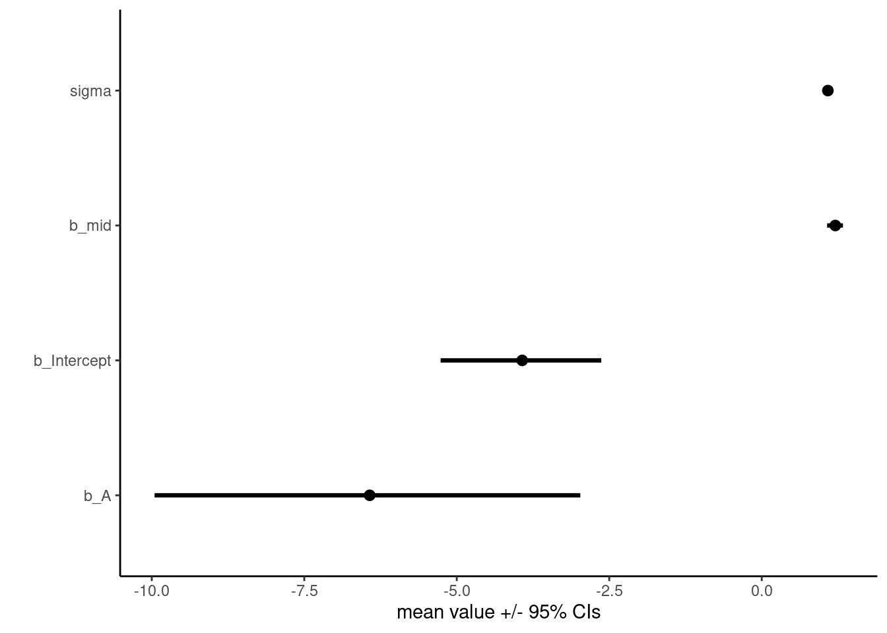

Question 1: Revisit the marriage, age, and happiness collider bias example from Chapter 6. Run models m6.9 and m6.10 again (pages 178–179). Compare these two models using both PSIS and WAIC. Which model is expected to make better predictions, according to these criteria, and which model yields the correct causal inference?
d <-sim_happiness(seed =1977, N_years =1000)d2 <- d[d$age >17, ]d2$A <- (d2$age -18) / (65-18)d2$mid <- d2$married +1# model with marital status and agetar_load(h04_q1a)mMA <- h04_q1amMA %>%gather_draws(b_Intercept, b_mid, b_A, sigma) %>%median_qi() %>%ggplot(aes(y = .variable, x = .value, xmin = .lower, xmax = .upper)) +geom_pointinterval() +theme_classic() +labs(y ="", x ="mean value +/- 95% CIs")

# model with agetar_load(h04_q1b)mA <- h04_q1bmA %>%gather_draws(b_Intercept, b_A, sigma) %>%median_qi() %>%ggplot(aes(y = .variable, x = .value, xmin = .lower, xmax = .upper)) +geom_pointinterval() +theme_classic() +labs(y ="", x ="mean value +/- 95% CIs")
# compare with PSIS & WAICcMA <-add_criterion(mMA, c("loo", "waic"))cA <-add_criterion(mA, c("loo", "waic"))loo_compare(cMA, cA, criterion ="loo")
elpd_diff se_diff
cMA 0.0 0.0
cA -147.7 15.4
loo_compare(cMA, cA, criterion ="waic")
elpd_diff se_diff
cMA 0.0 0.0
cA -147.7 15.4
The correct predictive model includes both marriage status and age. However, marriage status is a collider and the correct causal model includes only age. Thus, the correct causal model and the best predictive model are different in this case (because predictive models favour colliders).
Question 2: Reconsider the urban fox analysis from last week’s homework. On the basis of PSIS and WAIC scores, which combination of variables best predicts body weight (W, weight)? What causal interpretation can you assign each coefficient (parameter) from the best scoring model?
Question 3: Build a predictive model of the relationship show on the cover of the book, the relationship between the timing of cherry blossoms and March temperature in the same year. The data are found in data(cherry_blossoms). Consider at least two different models (functional relationships) to predict doy with temp. You could for example compare a linear model with a quadratic model. Compare them with PSIS or WAIC.
Suppose March temperatures reach 9 degrees by the year 2050. What does your best model predict for the predictive distribution of the day-in-year that the cherry trees will blossom?
Question 4: The data in data(Dinosaurs) are body mass estimates at different estimated ages for six different dinosaur species. See ?Dinosaurs for more details. Choose one or more of these species (at least one, but as many as you like) and model its growth. To be precise: Make a predictive model of body mass using age as a predictor. Consider two or more model types for the function relating age to body mass and score each using PSIS and WAIC.
Which model do you think is best, on predictive grounds? On scientific grounds? If your answers to these questions differ, why?
This is a challenging exercise, because the data are so scarce. But it is also a realistic example, because people publish Nature papers with even less data. So do your best, and I look forward to seeing your growth curves.